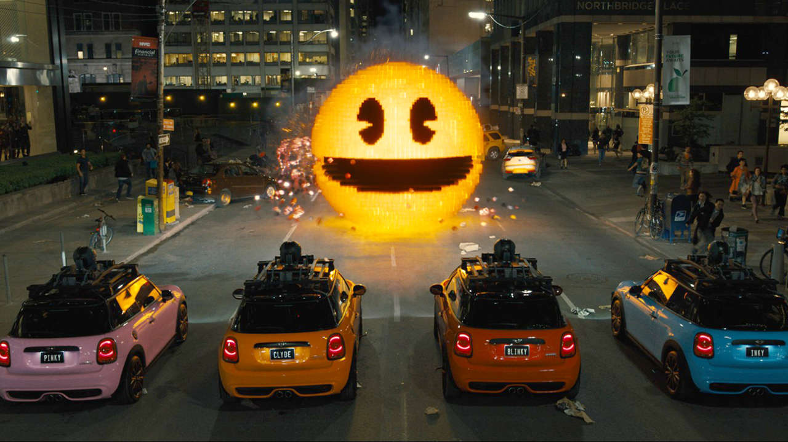
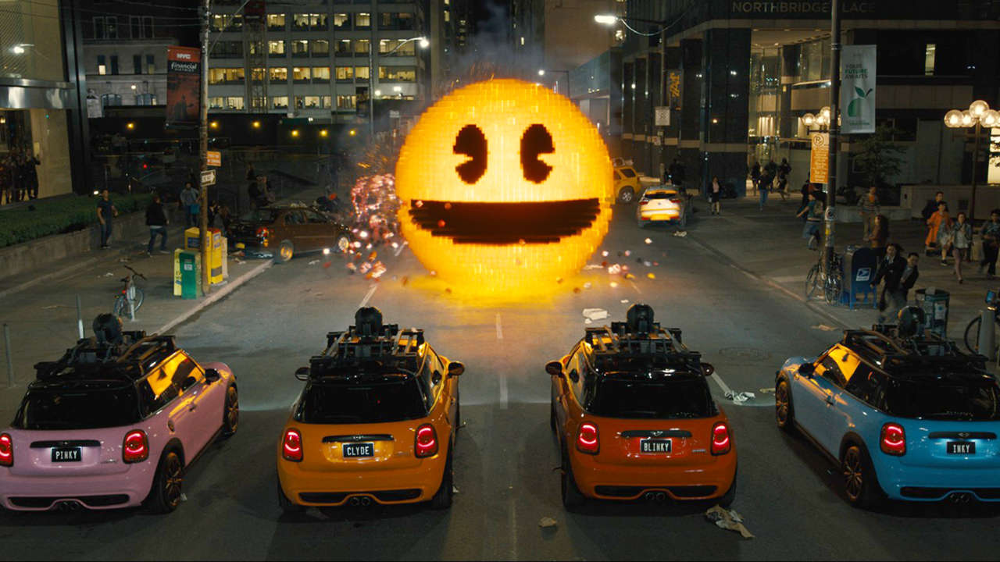

Pixels
Sipnosis
En el momento en el que unos alienígenas reciben señales de videojuegos arcade clásicos y los malinterpretan como
una directa y abierta declaración de guerra contra ellos, deciden atacar la Tierra utilizando los Pixels como forma para
efectuar múltiples ataques contra la humanidad.
Para solucionar todo este malentendido, el Presidente Will Cooper tiene que pedirle ayuda a su amigo de la infancia,
Sam Brenner, que fue campeón de videojuegos en los años 80. Ahora es un instalador de sistemas de cine en casa,
pero se une al equipo del Presidente junto a antiguos ‘arcaders’ para derrotar a los alienígenas y salvar el planeta.
La Teniente Coronel Violet Van Patten también se une a ellos, ya que es una especialista en suministrar a los
‘arcaders’ de armas únicas para luchar contra los alienígenas.
Tráiler
 

Si quieres comprarla o alquilarla pincha aquí